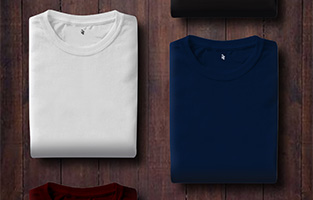
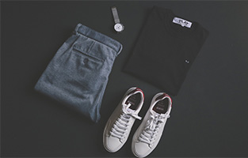
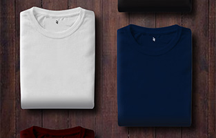
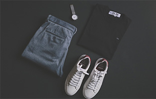

Our Story
Established with a passion for personal expression and self-discovery, Created Identity was born from the idea that clothing and accessories should empower you to be yourself. Our journey began with a vision to curate an exquisite collection that seamlessly combines in-house creations with renowned name brands, offering an exceptional variety of options for all fashion aficionados.
Our Commitment
1. Authenticity: We embrace the authenticity of individuality. Our in-house clothing and accessories are designed to reflect your inner creativity, while our selection of renowned brands brings the best of established fashion to your fingertips.
2. Quality: We stand by the quality of every item we offer. From our in-house creations to the world-renowned brands we carry, you can trust that each piece has been chosen with a keen eye for craftsmanship and durability.
3. Versatility: Created Identity is not limited to a single style or category. Our range encompasses everything from casual wear to high-end fashion, catering to your ever-evolving tastes and preferences.
4. Sustainability: We are dedicated to fostering a sustainable fashion culture. We are committed to eco-friendly practices, responsible sourcing, and ethical production methods to ensure we play our part in preserving the planet.
5. Community: Our brand is built on the idea that fashion is a communal endeavor. We encourage our customers to connect, share, and inspire one another through the clothes and accessories they love.
Why Choose Us?
Unique In-House Creations: Discover exclusive fashion items designed by our talented in-house team that are not available anywhere else.
Diverse Selection: Explore a wide range of renowned name brands, ensuring you have access to the latest trends and timeless classics.
Express Your Identity: Our products are more than just clothing and accessories; they are a canvas for your creativity and personal style.
Quality You Can Trust: We prioritize quality and craftsmanship in every piece we offer, ensuring longevity and satisfaction.
Sustainable Practices: Shop with a conscience, knowing that your choices contribute to a more sustainable and ethical fashion industry.


 


